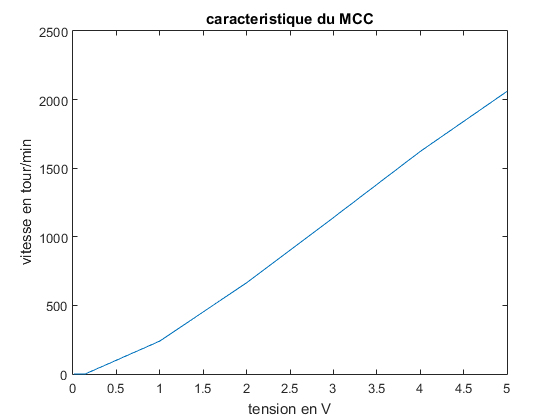
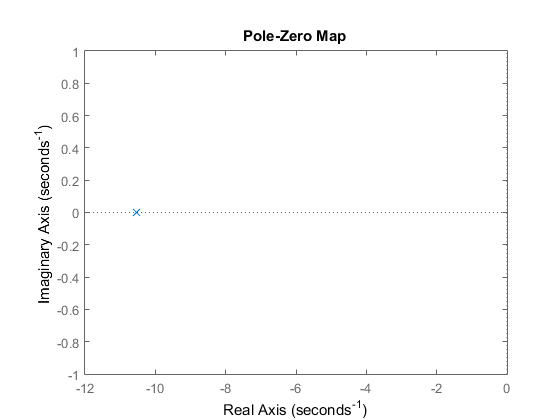
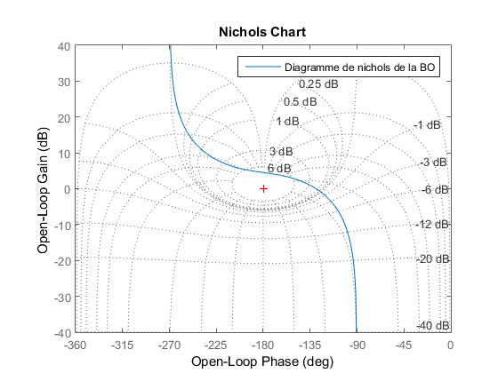
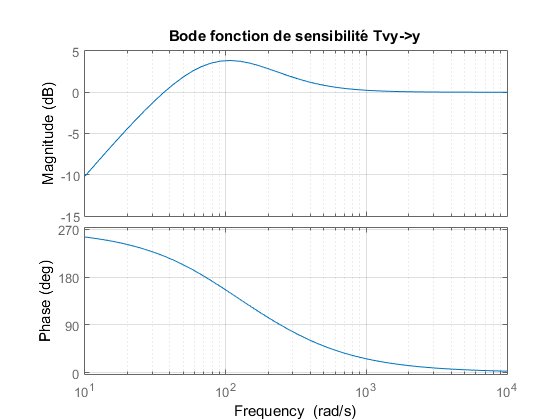
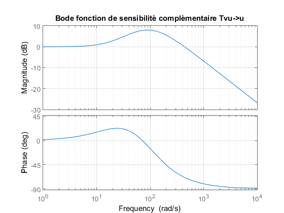
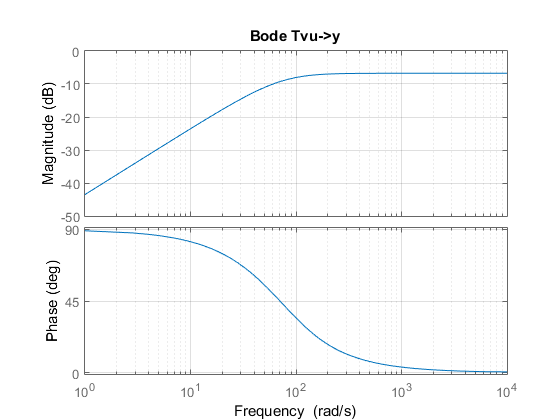
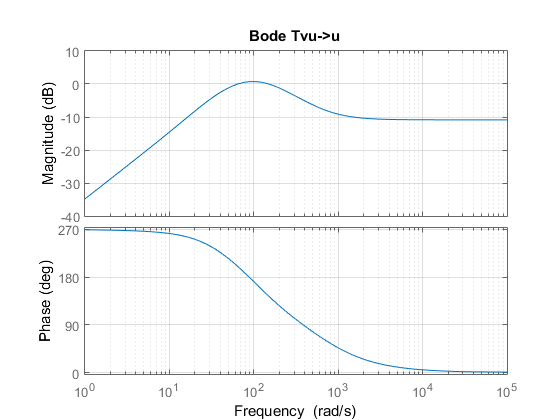
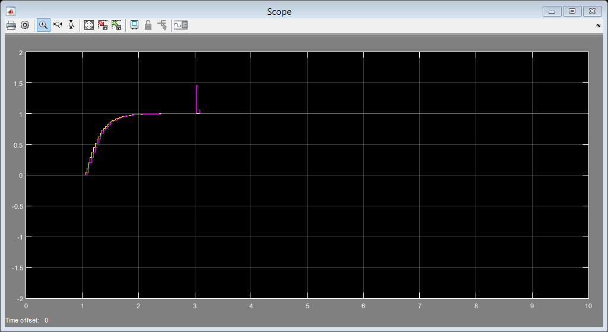

Contents
- Estimation du syst?me :
- determination de la gamme en tension de pilotage du MCC
- Calcul des parametres du systeme
- Gain statique
- Constante de temps
- Modele du systeme:
- Continu:
- fonction de transfert en Continu:
- fonction de transfert en Discret:
- Mise en place du régulateur
- Modelisation de pertubation
- Initialisation R,S,T
- Filtre d'adoucissement
- Fonctions de sensibilite
- Definition des Fonctions de transfert
- Etude du comportement du systeme
- Stabilite
- SIMULATION DU SYSTEME SUR SIMULINK :
- reponse du systeme en BF a un echelon amorti par un second ordre:
%%%%%%%%%%%%%%%%%%%%%%%%%%%%%%%%%%%%%%%%%%%%%%%%%%%%%%%%%%%%%%%%%%%%%%%%%%%%%%%%%%%% % Modelisation du Moteur de propulsion equivalent a un moteur courant continu (MCC)% %%%%%%%%%%%%%%%%%%%%%%%%%%%%%%%%%%%%%%%%%%%%%%%%%%%%%%%%%%%%%%%%%%%%%%%%%%%%%%%%%%%% clear all; close all;
Estimation du syst?me :
% Le MCC etant assimilable ? un systeme du premier ordre nous pouvons dire % que le systeme en continu peut s'ecrire comme suit : %%%%%%%%%%%%%%%%%%%%%%% % k % % G(p) = ------------ % % 1 + Tau * p % %%%%%%%%%%%%%%%%%%%%%%% % Nous avons de ce fait effectue un calcul des parametres % experimentalement.
determination de la gamme en tension de pilotage du MCC
% Ps: les testes ont ete faits sur chacune des roues. Nous avons presente % que ceux d'un des roues. On precise que les resultats ne sont pas % identiques sur chaque roue. % La demarche est simple, il suffit de mesurer d'abord la tension nominale % qui est la tension minimale a partir de laquelle les roues commencent ? % tourner a vide. Nous avons mesur? 0.15 V pour les tension positives et 0.33V % pour les tensions negatives. de ce fait sur cet intervalle en tension % [-0.33V 0.15V] le moteur ne tourne pas meme s'il l'administrateur envoie une % consigne. % Nous avons ensuite envoye des consignes en tension continue allant de 1V % a 5V et a l'aide d'un tachym?tre, nous avons visualise la caracteristique % du systeme qui est la m?me pour les tensions negatives. Nous avons la courbe suivante: Te=0.03; Tension = [0.01,0.03,0.05,0.07,0.09,0.1,0.14,1,2,3,4,5]; vitesse = [0,0,0,0,0,0,0,240,665,1140,1622,2060]; figure(1) plot(Tension,vitesse) title('caracteristique du MCC') xlabel('tension en V') ylabel('vitesse en tour/min') % Nous avons vu que le systeme est lineaire sur sa zone de % fonctionnement. Nous avons donc choisi comme gamme de pilotage du moteur % la gamme suivante :[1V 6V] pour eviter que le systeme focntionnement en saturation. % Le courant nominal a ete mesur? a : 3,3V. Il ne faudra pas depasser cette % tension si on veut eviter un surchauffement du moteur.
Calcul des parametres du systeme
Gain statique
Nous somme partis de la courbe caracterisque du systeme en calculant le coefficient de proportionnalite entre la vitesse et le courant. Ce coefficient correspond au gain statique K du systeme mécanique,il vaut Km=478. Mais étant donnée que notre retour est en courant nous avons jugé plus intéressant de travailler sur le retour électrique au lieu du retour mécanique qui est donnée ci-dessous.
K = 1.6996;
Constante de temps
% la constante de temps est trouve a l'aide du nucleo en envoyant une % consigne en echelon et en faisant une acquisition en courant a travers % l'uart du nucleo. Après, les mesures relevees ont permis le traçé d'une % courbe qui a permis de trouver la constante mécanique( le système est % équivalent à un premier ordre avec un gain électrique et une constante de % tamps mécanique puisque la constante de temps electrique est % négligeable) et le gain électrique. tau = 0.095;
Modele du systeme:
Continu:
fonction de transfert en Continu:
Bcon = K; Acon = [tau 1]; Gcon = tf(Bcon,Acon) % Stabilite du systeme: figure(2) pzmap(Gcon); % le systeme est clairement stable car il presente un seul pole -10.63 qui % est dans le domaine de stabilite.
Gcon =
1.7
-----------
0.095 s + 1
Continuous-time transfer function.
 fonction de transfert en Discret:
Gd=c2d(Gcon,Te);
Gd.variable='z^-1'
Bd=Gd.num{:};
Ad=Gd.den{:};
Gd =
0.4602 z^-1
---------------
1 - 0.7292 z^-1
Sample time: 0.03 seconds
Discrete-time transfer function.
Mise en place du régulateur
Modelisation de pertubation
E=Bd; C=1; D=[1,-1]; ksi=1.3 wo=5 % Pc=tf(1,[1,2*ksi*wo,wo*wo]); % Pd=c2d(Pc,Te); % D2=Pd.den{:};
ksi =
1.3000
wo =
5
Initialisation R,S,T
ret=1; Dc=1; Dr=D; P=conv([1,-roots(Ad)/12],[1,-roots(Ad)/12]); % Le choix de ces pôles influencent sur les marges de stabilité du système. % En effet, plus les pôles sont rapides plus nos marges de gain et de phase % sont réduites. Notons toutefois que ce choix des pôles doit être tel % qu'ils restent inférieur au pôle du système( pôle de Ad ). Rd1=conv(Ad,Dr); [S,R]=BEZOU_Z(Rd1,Bd(2),ret,P); % Polynomes R,S,T Rd=conv(S,Dr) ; Rn=(conv(R,Dc))'; T=(1/sum(Bd))*P ; FTRz=tf(Rd,Rn,Te,'Variable','z^-1'); % Fonction de transfert perturbation Gp=tf(conv(E,Rn),T,Te,'variable','z^-1') Kp= 1/dcgain(Gp);
Gp =
1.608 z^-1 - 0.7255 z^-2
-----------------------------------
2.173 - 0.2641 z^-1 + 0.008024 z^-2
Sample time: 0.03 seconds
Discrete-time transfer function.
Filtre d'adoucissement
% Ce filtre a pour but de ramener la pente infinie de l'echelon en consigne % a une pente de valeur finie. Il a donc pour role d'adoucir la consigne % quand cette derniere est trop brutale. % Implementation du Filtre ksi=1.3 wo=10 Fc=tf(1,[1,2*ksi*wo,wo*wo]); Fd=c2d(Fc,Te); Kf=1/dcgain(Fd);
ksi =
1.3000
wo =
10
Fonctions de sensibilite
Definition des Fonctions de transfert
Sz= tf(conv(Ad,Rd),P,Te,'Variable','z^-1'); % Fonction de sensibilite discrete Sc=d2c(Sz) ; % Fonction de sensibilité continue Tz=tf(conv(Bd,Rn),P,Te,'Variable','z^-1'); % Fonction de sensibilite complémentaire discrete Tc=d2c(Tz); % Fonction de sensibilite complementaire continue GSz=tf(conv(Bd(2),Rd),P,Te,'Variable','z^-1'); % FT entre perturbations d'entree et sortie du systeme GSc=d2c(GSz); % FT entre perturbations d'entree et sortie du systeme en continue RSz=minreal(FTRz*Sz); % FT entre perturbations de sortie et l'entree du systeme RSc=d2c(RSz) % FT entre perturbations de sortie et l'entree du systeme en continue
RSc = 0.2863 s^3 - 199 s^2 - 4201 s - 1.792e-10 ----------------------------------------- s^3 + 213.2 s^2 + 1.367e04 s + 2.312e05 Continuous-time transfer function.
Etude du comportement du systeme
Stabilite
% Fonction de tranfert en boucle ouverte Gboc = minreal((1-Sc)/Sc); figure(3); nichols(Gboc); grid; legend('Diagramme de nichols de la BO'); % Du diagramme de nichols on peut deduire les differentes marges de % stabilite: % Marge de Gain = 4.52 dB C [4,6] dB , Marge de Phase = 50.7 degres C [30,60] deg , % Marge de Retard = 2.39*10^(-3) s. % % Pour la marge de module nous regardons le gain minimal avant la fréquence % de coupure de la fonction de transfert 1 + Gboc ce qui nous donne une % marge de module de -3.85 dB. Cette valur n'appartient pas à la plage % recommandee [-8,-6] dB , mais differentes manipulations des poles du polynôme P % nous ont montre que pour atteindre cette plage, nous risquons de sortir % des plages de gain et de phase recommandees alors nous avons garde une % configuration qui satisfait le maximum de recommendations. figure(4); bode(Sc); title('Bode fonction de sensibilité Tvy->y'); grid; % Nous contastons que la fonction de sensibilite est un passe-haut à la % pulsation 108 rad/s donc les perturbations pour la plupart importantes en % basses frequences sont fortement diminuees. Notons egalement que le gain % en hautes frequences de cette fonction est nulle, donc il n'amplifie pas % les pertubations. figure(5) bode(Tc); title('Bode fonction de sensibilité complémentaire Tvu->u'); grid; % Nous contastons que la fonction de sensibilite complementaire est un % passe-bas à la pulsation 84.3 rad/s donc les bruits de mesures present % en hautes fréquences sont facilement compenses. Notons egalement que le % gain en basses frequences de cette fonction est nulle, donc il n'agit pas % sur les composantes presents en basses frequences. figure(6) bode(GSc); title('Bode Tvu->y'); grid; % Represente "techniquement" un passe haut, mais son gain finale de valeur % -10dB fait qu'il divise par un facteur 5 les composantes de hautes % frequences. figure(7) bode(RSc); title('Bode Tvu->u'); grid; % Represente "techniquement" un passe bande laissant passer les frequences % comprises entre 66.4 rd/s et 152 rd/s mais son gain final de valeur % -10dB fait qu'il divise par un facteur 5 les composantes de hautes frequences. % Conclusion: % GSRc et RSc, forme un passe bande de bande passante tres etroite % BP=152-66.4 = 85.6 rd/s ce qui permet de reduire les imperfections % d'entree-sorties.    
SIMULATION DU SYSTEME SUR SIMULINK :
reponse du systeme en BF a un echelon amorti par un second ordre:
% Nous avons envoye comme consigne la reponse d'un systeme du second ordre % a un echelon pour etre le plus proche des conditions reelles car la % consigne n'est pas brutale (echelon) dans les conditions reelles. sim('simulation_system.slx') % Nous voyons bien comme prevu la reponse indicielle d'un systeme du second % ordre qui suit bien notre consigne et rejette les perturbations du type % echelon assez rapidement (en moins de 6 periodes d'echantillonage).